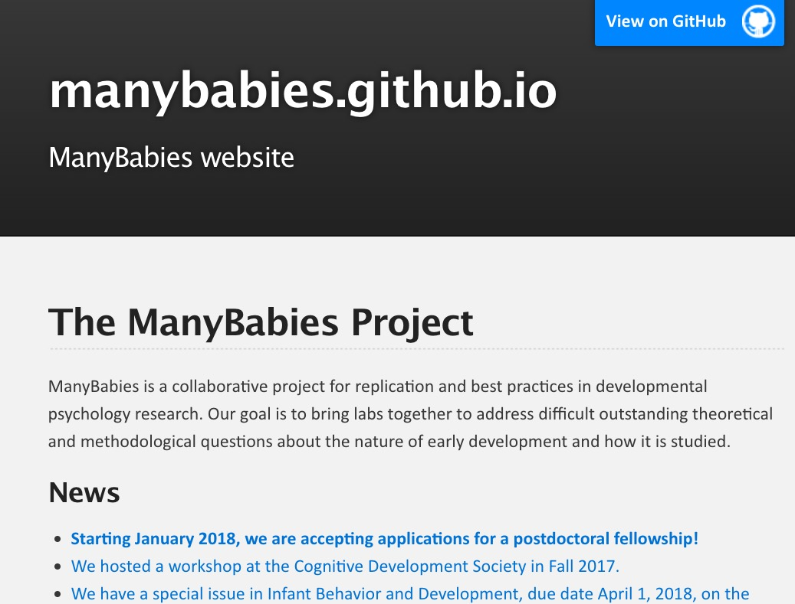

The promise of open developmental science
Rick O. Gilmore
2018-10-04 06:49:46


Overview
- Imagine…
- Barriers
- Progress
- Yes, we can
Imagine…
…meta-analyses from your desktop
…visualization of task data accumulated across studies & labs
…machine-learning-assisted analysis
Source: Ori Ossmy (NYU)
…“scriptable” analyses and visualizations from centrally stored & shared data
…easy…
downloading and reuse of others’ materials
Cole, P.M., Gilmore, R.O., Scherf, K.S. & Perez-Edgar, K. (2016). The Proximal Emotional Environment Project (PEEP). Databrary. http://doi.org/10.17910/B7.248.
…reproduction of others’ procedures through video protocols
The PLAY Project Wiki: https://dev1.ed-projects.nyu.edu/wikis/docuwiki/doku.php/landing
…A truly cumulative developmental science

Where
- Findings accumulate
- Theories are advanced, accepted, expanded, or rejected
- Phenomena become increasingly predictable
- Discovery accelerates
Barriers
Psychological science is harder than physics


Studies are underpowered
“Assuming a realistic range of prior probabilities for null hypotheses, false report probability is likely to exceed 50% for the whole literature.”
Published papers have errors


Confusion about data ownership
- Institutions
- Taxpayers
- Researchers
- Participants
Eagerly share findings but not data or materials

Blinded from seeing the whole elephant

Fall victim to the toothbrush problem (Mischel, 2009)
“…psychologists tend to treat other peoples’ theories like toothbrushes; no self-respecting individual wants to use anyone else’s.”
“The toothbrush culture undermines the building of a genuinely cumulative science, encouraging more parallel play and solo game playing, rather than building on each other’s directly relevant best work.”
Solutions
Mischel 2009
- Common tools
- Robust, replicable, consequential findings
- Boundary crossing and bridge building
Make open data & materials sharing
…the norm not the exception
Plan for sharing
- From the earliest stages
- Data Management Plans (NSF and NIH proposals)
- Data as a “first order” research product
What to share
- Data
- & analysis code/scripts (R, Python, SPSS, SAS, …)
- Rawest possible (trial-level, individual, …)
- Displays (& code to generate)
- Protocols & procedures
- Video as gold standard


The PLAY Project Wiki: https://dev1.ed-projects.nyu.edu/wikis/docuwiki/doku.php/landing
Where to share
With whom
- Public
- Risk of reidentification
- Can you really anonymize?
- Researchers
- ICPSR, Databrary, & OpenNeuro
- People you select & vet
When
- Soon after you collect it
- On manuscript submission
- On acceptance or publication
- End of grant
When I’m damn good and ready…
How
- “FAIRly”
- Findable, Accesible, Interoperable, and Reusable (Wilkinson et al., 2016)
- Easier to find in repository
- Interoperable formats
- Codebooks
Ethically
- Ask permission to share (especially for sensitive, identifiable data)
- Use template language
- (Gilmore & Nilsonne, 2017)
- Don’t promise to destroy data (but GDPR?)
- Don’t unduly restrict future reuses
“the principles of human subject research require an analysis of both risks and benefits…such an analysis suggests that researchers may have a positive duty to share data in order to maximize the contribution that individual participants have made.”
Openly
- Without restriction on others’ reuse
- Without quid pro quo, pre-approval, or requirement of co-authorship
- With expectation of ethical use AND proper citation

Let’s
…build platforms for discovery
that will make physicists jealous
…acknowledge the elephant in the room


…build a
- Robust
- Transparent
- Reproducible
- Powerful
- Openly shared
- Cumulative
- (Awesome!)
- Psychological Science

Open! (Says me)
This talk was produced on 2018-10-04 06:49:47 in RStudio 1.1.383 using R Markdown and the reveal.JS framework. The code and materials used to generate the slides may be found at https://github.com/gilmore-lab/2018-05-26-aps-opensaysme/. Information about the R Session that produced the slides is as follows:
## R version 3.5.1 (2018-07-02)
## Platform: x86_64-apple-darwin15.6.0 (64-bit)
## Running under: macOS Sierra 10.12.6
##
## Matrix products: default
## BLAS: /Library/Frameworks/R.framework/Versions/3.5/Resources/lib/libRblas.0.dylib
## LAPACK: /Library/Frameworks/R.framework/Versions/3.5/Resources/lib/libRlapack.dylib
##
## locale:
## [1] en_US.UTF-8/en_US.UTF-8/en_US.UTF-8/C/en_US.UTF-8/en_US.UTF-8
##
## attached base packages:
## [1] stats graphics grDevices utils datasets methods base
##
## other attached packages:
## [1] revealjs_0.9
##
## loaded via a namespace (and not attached):
## [1] compiler_3.5.1 backports_1.1.2 magrittr_1.5 rprojroot_1.3-2
## [5] tools_3.5.1 htmltools_0.3.6 yaml_2.2.0 Rcpp_0.12.18
## [9] stringi_1.2.4 rmarkdown_1.10 knitr_1.20 stringr_1.3.1
## [13] digest_0.6.16 evaluate_0.11